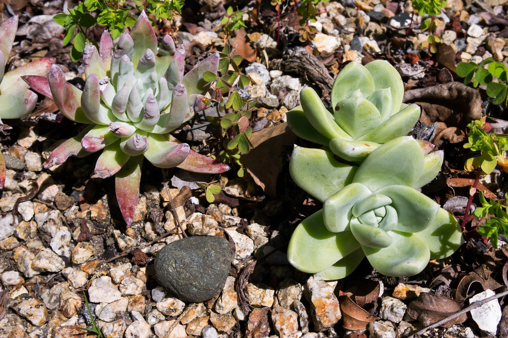

カフェウェルカムについて
取手市役所 藤代庁舎の中で、日々ひとつずつ積み重ねてきた仕事の記録です。

共生型地域交流拠点の～ま カフェウェルカム
Cafe Welcome カフェウェルカムは、正式名称を「共生型地域交流拠点の～ま カフェウェルカム」といい、取手市役所 藤代庁舎内に設けられたカフェです。運営は障害者福祉センターふじしろ。地域に開かれた交流の場として、日々営業しています。
作る人、迎える人
厨房を担うのは障害者福祉センターふじしろの職員です。仕込みから仕上げまで、一皿ずつ手をかけています。フロアでお客様をお迎えするのは、利用者の皆さん。オーダーを取り、料理を運び、レジを担う。それぞれが担う役割の中で、技術と接客を磨いてきました。厨房とフロア、それぞれの持ち場で積み重ねてきた仕事が、このカフェの一皿と一杯を支えています。
ぶたすじカレーができるまで
看板メニュー「ぶたすじカレー」に使われているのは、千葉県柏市の畜産会社と交渉して仕入れている希少部位「柏幻霜(げんそう)ポーク」です。一般には流通しにくいこの部位を、丁寧に下処理し、スパイスと煮込んで仕上げていく。その下ごしらえの工程には、利用者の皆さんも一緒に手を動かしてきました。
食材の仕入れ先を探すところから、下ごしらえ、味の調整まで。時間をかけて形にしてきた一皿です。ご飯の量はお好みで調整でき、コーヒーをセットで+100円。レトルト版もあり、店頭でご購入いただけます。

店内の空間について
店内は広々とした造りで、落ち着いた雰囲気の中でお食事を楽しんでいただけます。入り口の外には小さな多肉植物の寄せ植えを飾っており、道行く方にも「かわいい」とお声をいただいています。

店内では、取手市内の福祉施設の利用者が手がけた雑貨や工芸品も販売しています。
手しごとのコーナーを詳しく見る >